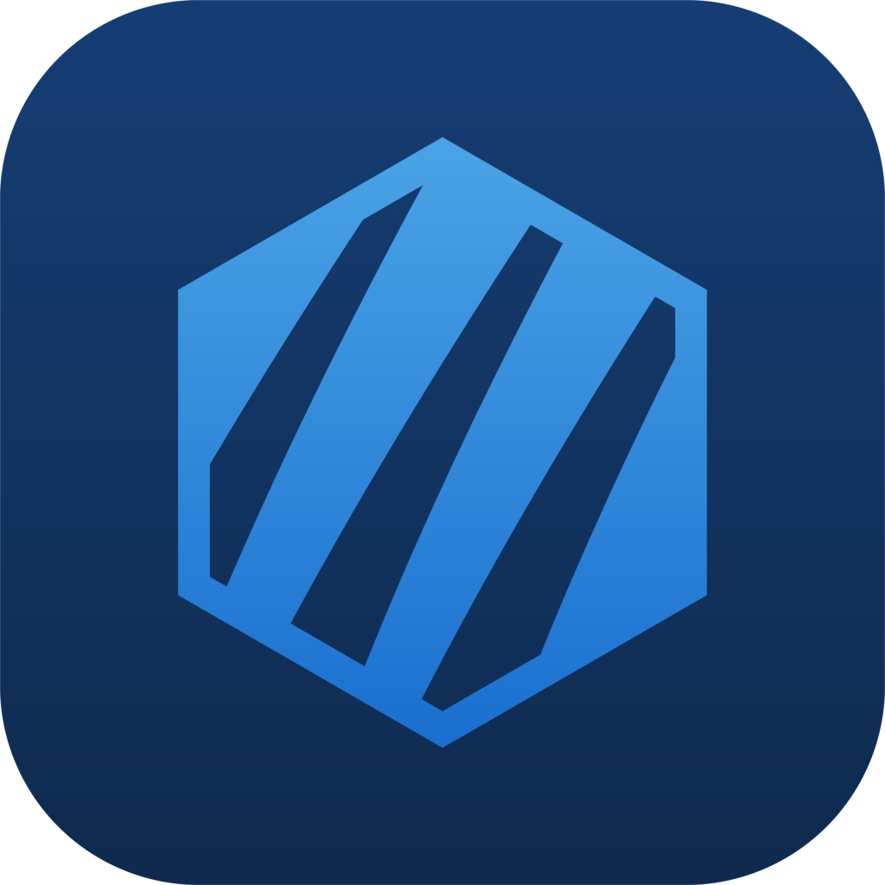

CryoClaw 是基于 openclaw 内核 的高效 harness。
零配置、零依赖的 OpenClaw 桌面客户端 —— 不用装 Node.js，不用碰 npm。
视觉、设置架构、流式渲染、模型管理、更新链路 —— 在 OneClaw 之上全部重来一遍。
逐帧纯文本流式 + 终态一次性排版，消除逐帧全量 markdown 的 O(n²) 卡顿；折叠区懒渲染，长对话也稳。
provider 分组、拖拽排序、fallback 链、能力徽标、密钥探测，四处选择器联动。
应用走 GitHub Releases 差分，内核走独立升级器，可升级、可回滚。
design token + 原语组件 + CryoIcons 自绘图标，浅色一等 + 暗色独立调参。蓝青混色，干净、克制、耐看。
API Key 只存本机，IPC 过 sender guard，日志脱敏，一键导出脱敏诊断包。
飞书 / 企业微信 / 钉钉 / QQ / 微信 —— 设置里扫码绑定，让 AI 在你团队的 IM 里干活。
按模型能力开放思考档位，Kimi K3 支持 low/mid/high/xhigh/max。
设置页启停/卸载插件，内置插件市场搜索、一键安装，告别命令行。
任意 rewind / fork 出新会话，消息引用、失败重发、快捷键全流程顺手。
不用 Node，不用 npm，不用配置环境变量。
从 GitHub Releases 获取 Windows x64 安装程序，双击即装。
填一个 API Key，选好模型与 fallback 链，自动探测有效性。
约 0.6s 见到界面，即刻开聊 —— 本地模型也支持 Ollama。
主模型 + fallback 备用链，自动降级有提示；也支持 Ollama 本地模型与 OpenAI / Anthropic 兼容接口。
下载安装包 → 选择服务商，输入 API Key → 开始对话。
不需要 Node.js，不需要 npm，不需要配置环境变量。
加速下载由本站 Cloudflare 边缘节点中转 GitHub 安装包，文件完全一致；安装前可对照 Release 页 latest.yml 的 sha512 校验。